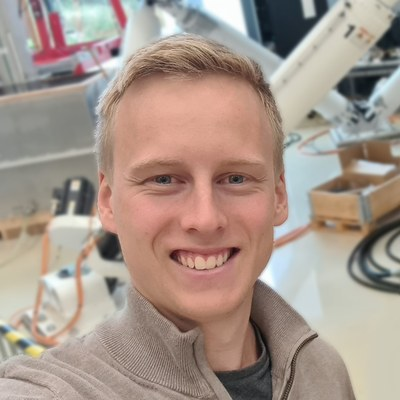
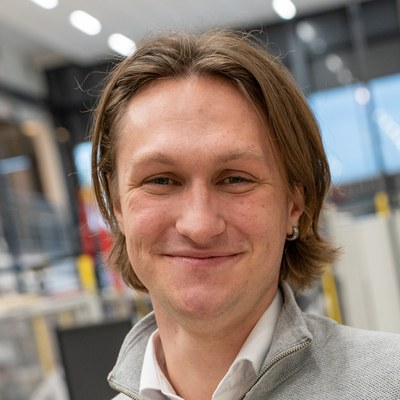

We've worked with
- VOCA
- Optilift
- Broomstick
- Ogtech
- Hy4mar
- Greentech Innovators
001 · Services
We're not specialists in one thing.
Most of our projects sit between physics, software and machines. This is what we do most.
Simulation
Physics-based and data-driven models of equipment and processes, so you can test before you build.
Real-time software
Control, fieldbuses and edge software on PLCs and industrial PCs, plus the interfaces around them.
Data collection and storage
Time series, history and alarms, from equipment in the field to where it's useful.
Digital twins
A running model of the plant on real data, for training, testing and operations.
Machine learning
Where it makes sense. We'll also tell you when a simpler model is enough.
Robotics
Autonomy, motion planning and integrating robots into existing production.
010 · Who we are
The people doing the work.
When you work with Vardex, you work directly with us.

Even Falkenberg Langås
Partner · R&D Engineer
PhD Candidate, Mechatronics
Simulation, real-time software and human-robot teaming for autonomous machines. Ex-CTO of a digital-twin startup.

Martin Økter
Partner · R&D Engineer
PhD Candidate, Mechatronics
Robotics and reinforcement learning for automated EV battery disassembly. Two best-paper awards.
About the name. Varde is Norwegian for cairn: stones stacked to mark the route across open mountain. The x is the unknown we're solving for.
011 · References
Some of the people we've worked for.
“Even har utført et fremragende og presist utviklingsarbeid med den digitale tvillingen for vår patenterte Hydrogen Transfer-prosess finansiert av Innovasjon Norge. Den har høstet mange lovord fra kunder og partnere.”
“Even has carried out outstanding and precise development work on the digital twin for our patented Hydrogen Transfer process, funded by Innovasjon Norge. It has drawn much praise from customers and partners.”
“Broomstick has worked with Even on several occasions, and he has consistently been a valuable sparring partner for our team. Even has a deep understanding of software development, system architecture and how to make different systems work together as a whole. He combines solid technical knowledge with a practical, solution-oriented approach, and he is good at seeing both the details and the bigger picture. We have great confidence in his expertise and gladly recommend him.”
100 · Contact
Not sure which way to go? Let's talk.
Tell us briefly what you're working on. We reply within a couple of days.
hello@vardex.io